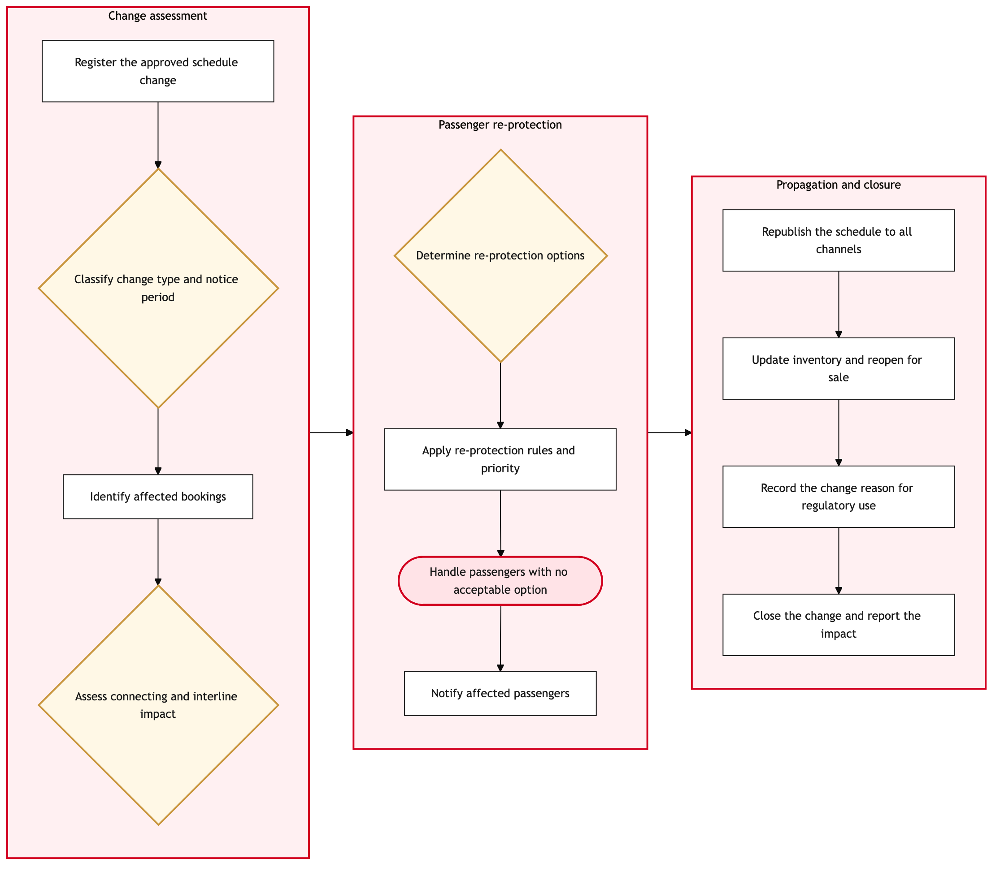

Updated 2026-08-18
Schedule Change Management and Passenger Re-protection
Process flow
Click to zoom

Process steps
▼
Phase 1 — Change assessment
4 steps
| Step | Activity | Role | System | Input | Output | KPI | Dec | Exc | Pain point |
|---|---|---|---|---|---|---|---|---|---|
| 1.1 | Register the approved schedule change | Schedule Planner | Lufthansa Systems NetLineB | Approved change request | Registered change with effective date | Changes registered within 1 business day of approval | N | N | Changes arrive from several sources and are not always registered before being actioned |
| 1.2 | Classify change type and notice period | Network Planning Analyst | Lufthansa Systems NetLineB | Change details and departure date | Change classification with notice period | Change classified before passenger action at 100 percent | Y | N | Classification determines the regulatory position and is applied inconsistently |
| 1.3 | Identify affected bookings | Customer Re-protection Analyst | Amadeus Altea ReservationsA | Change scope and effective date | Affected passenger and booking list | Affected bookings identified within 24 hours of registration | N | N | Connecting and interline itineraries are harder to identify than point to point bookings |
| 1.4 | Assess connecting and interline impact | Network Planning Analyst | Star Alliance InterlineA | Affected booking list | Broken connection assessment | Broken connections identified for 100 percent of affected itineraries | Y | N | Partner-operated onward legs are not visible in the same view as Air Canada legs |
▼
Phase 2 — Passenger re-protection
4 steps
| Step | Activity | Role | System | Input | Output | KPI | Dec | Exc | Pain point |
|---|---|---|---|---|---|---|---|---|---|
| 2.1 | Determine re-protection options | Customer Re-protection Analyst | Amadeus Passenger RecoveryA | Affected bookings and available capacity | Re-protection option set by passenger | Acceptable option available for 95 percent of affected passengers | Y | N | Re-protection competes for the same seats that are still being sold |
| 2.2 | Apply re-protection rules and priority | Customer Re-protection Analyst | Amadeus Passenger RecoveryA | Option set and passenger status | Prioritised re-protection assignment | Re-protection applied within 48 hours of change registration | N | N | Priority rules balance status, fare paid and connection complexity with limited automation |
| 2.3 | Handle passengers with no acceptable option | Customer Re-protection Analyst | Salesforce Service CloudA | Unresolved passenger list | Refund, partner rebooking or negotiated alternative | Unresolved passengers below 1 percent of those affected | N | Y | These cases go to the contact centre and become the seed of later complaints |
| 2.4 | Notify affected passengers | Customer Re-protection Analyst | Air Canada Mobile AppA | Re-protection assignment | Bilingual notification of the change and new itinerary | Passengers notified within 24 hours of re-protection | N | N | Notification must be produced in English and French and is assembled per change type |
▼
Phase 3 — Propagation and closure
4 steps
| Step | Activity | Role | System | Input | Output | KPI | Dec | Exc | Pain point |
|---|---|---|---|---|---|---|---|---|---|
| 3.1 | Republish the schedule to all channels | Schedule Publication Analyst | IATA Type-B MessagingC | Registered change | Republished schedule across distribution | All channels reflect the change within 24 hours | N | N | Each change re-triggers the full distribution chain and channels update unevenly |
| 3.2 | Update inventory and reopen for sale | Schedule Publication Analyst | Amadeus Altea InventoryA | Republished schedule | Updated sellable inventory | Inventory consistent with the change within 4 hours | N | N | Selling the changed flight before re-protection completes creates a second conflict for the same seats |
| 3.3 | Record the change reason for regulatory use | Network Planning Analyst | Salesforce Service CloudA | Change classification | Reason recorded and available to customer relations | Reason recorded for 100 percent of changes inside the regulated window | N | N | A commercially framed reason can read very differently when tested against APPR |
| 3.4 | Close the change and report the impact | Schedule Planner | Lufthansa Systems NetLineB | Completed re-protection and republication | Closed change record with impact summary | Changes closed within 5 business days of effective date | N | N | Cumulative change volume across a season is not reported, so the pattern stays invisible |
Swim lanes
Schedule Planner1.1 3.4
Network Planning Analyst1.2 1.4 3.3
Customer Re-protection Analyst1.3 2.1 2.2 2.3 2.4
Schedule Publication Analyst3.1 3.2
Systems touched
Lufthansa Systems NetLineBAmadeus Altea ReservationsAStar Alliance InterlineAAmadeus Passenger RecoveryASalesforce Service CloudAAir Canada Mobile AppAIATA Type-B MessagingCAmadeus Altea InventoryAAmadeus Altea DCSAaircanada.comA
Key performance indicators
- Affected bookings identified within 24 hours of change registration
- Acceptable re-protection option available for 95 percent of affected passengers
- Passengers notified within 24 hours of re-protection
- All distribution channels reflecting the change within 24 hours
- Change reason recorded for 100 percent of changes inside the regulated window
Risks and control points
- Schedule change reasons recorded for commercial purposes proving indefensible when tested against the Air Passenger Protection Regulations
- Re-protection competing for seats that are still being sold on the changed flight
- Connecting and interline passengers missed because partner-operated legs are not visible in one view
- Channels updating unevenly and leaving a withdrawn or retimed flight sellable
- Cumulative in-season change volume going unreported, so a systemic planning problem stays invisible
Air Canada Process Wiki — process and systems reference compiled from public sources
for IT Application Management and User Support pre-sales discovery.
Built 2026-08-20. Every system carries an evidence tier: tier C is an industry pattern and tier U is an open
question, and neither should be asserted as fact about Air Canada without confirmation in discovery.
Not affiliated with or endorsed by Air Canada. Air Canada, Aeroplan and Altitude are trademarks of Air Canada.